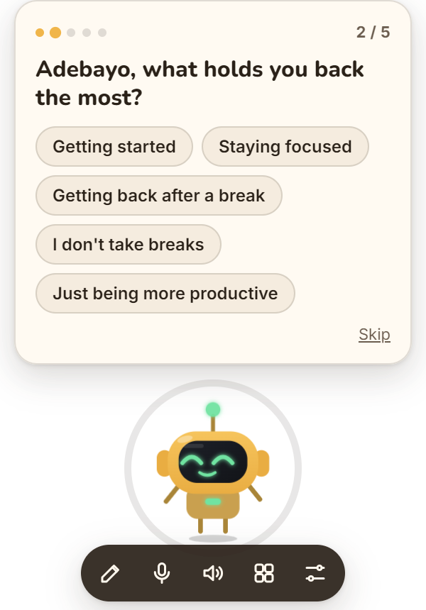
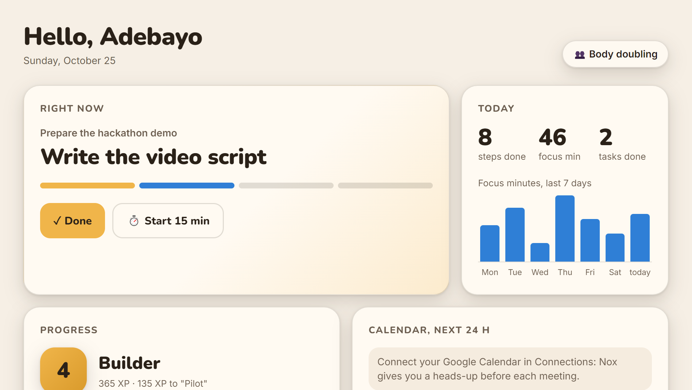

Free · Windows · English & French
It just never got a starter. Nox is a tiny desktop buddy that talks to you first, breaks your task into tiny steps, and gently brings you back when you drift.
Built for ADHD first. Works for anyone who starts everything and finishes nothing.Sound familiar?
You open the doc to "just start."
One notification.
You're deep in YouTube. The doc is still blank.
You know exactly what to do. You just can't make yourself start. And every app waits for you to make the first move.
Nox makes the first move for you.
In 2 minutes
Starting a task out loud, drifting to YouTube, coming back after a break: the three moments where Nox changes everything.
Meanwhile, download Nox and try it in demo mode, no key needed.
How it works
Out loud or typed, the way it comes to you: "I need to write my report."
Into tiny steps of 2 to 10 minutes. You only see the next one, and a timer ring starts around Nox.
Nox stays with you, celebrates each step, and gives you the next one. No guilt, no streak to lose.
Features
Real-time voice: talk to it like a friend, and interrupt it anytime. Or type, if you prefer.
Drifting to YouTube or social media? A kind nudge, only if you allowed it.
Step away for a while: Nox saves your spot and hands it back when you return, in 5 seconds.
Hyperfocused for too long? Nox suggests a break, and keeps your place.
What blocks you, when your energy peaks, what helps. Everything stays on your PC, deletable in one click.
XP for every step, 8 ranks, 8 skills to unlock. Progress you can see, never a streak you can lose.
Your current step, checked-off steps, focus minutes over 7 days, and your task history.
Small, medium or large. Hide it next to the clock, bring it back with Ctrl+Alt+N.
Nox follows your Windows language, and you can switch anytime. It talks and listens in your language.
"Nox, note that I need to call Sam." Your notes land on sticky cards in the dashboard, and Nox reads them back when you ask.
A report? Nox offers to open Word. Coding? VS Code. A presentation? PowerPoint. Not installed? It opens the web version.
Tell it it's cute, it blushes. Say thanks, its eyes turn into hearts. Say you're exhausted, it gets it and offers a break.


Connections
A heads-up 60 and 30 minutes before a meeting, an offer to get ready, and a quick review of your day every morning.
Nox spots important emails and offers to read them to you. Tell it "let me know if the tax office writes": it watches for it.
Scan a QR code: when you're away from your PC, Nox pings you on your phone. You can write to it too.
Grounded in research
The onboarding asks what blocks you, when you have energy and how long you can focus. Nox then picks the method that fits you. Change it anytime.
Russell Barkley's model: ADHD is a problem of doing, not knowing. So Nox lives where you work, and makes time visible.
The core of Safren's cognitive behavioral therapy for adult ADHD, tested in a randomized controlled trial.
Gollwitzer's implementation intentions: a clear effect on reaching goals in a meta-analysis of 94 tests.
Details and sources: the research summary.
Install
The file Nox.Setup.1.4.0.exe (about 80 MB) is on the releases page.
Nox installs itself, launches, and will start with Windows. If Windows says "Windows protected your PC", click More info then Run anyway: the installer simply isn't signed yet.
It lands at the bottom right of your screen and introduces itself. Pick your language, paste your OpenAI key for its real voice (encrypted on your PC) or choose Try without a key, then 5 quick questions.
In the dashboard, Connections card: your Google Calendar (secret iCal address), Gmail (app password) and Telegram (QR code).
git clone https://github.com/adebayo-moutalabi/nox.git
cd nox
npm install
npm start # NOX_FAKE_AI=1 for the demo brain, no key
npm test # the whole journey on the real app
npm run dist # builds the installer in dist/FAQ
Yes. Nox is free and open source. Its real-time voice uses your own OpenAI key, so you pay OpenAI directly for what you use. Demo mode works without any key, for free.
Not to try it: choose "Try without a key". For the natural real-time voice, create a key on platform.openai.com (API keys page) and paste it during onboarding or in the dashboard. It stays encrypted on your PC.
Your profile, memories, tasks and stats stay in a file on your PC. Your keys and passwords are encrypted by Windows. What you say to Nox is sent to OpenAI to generate its replies. Nox only looks at the active window title if you say yes.
Yes. Nox was designed for ADHD first, but it helps anyone who struggles to start, gets interrupted all the time, or loses the thread after a break.
No. Nox is a productivity tool, not a medical device. If ADHD affects your daily life, talk to a doctor or a specialist.
Signing an installer requires a paid certificate, which this first version doesn't have yet. Click "More info" then "Run anyway". The code is open source, so anyone can check what it does.
Not yet: Nox is Windows-only for now (Windows 10 and 11, 64-bit). A Mac version and a web version are on the roadmap.
Press Ctrl+Alt+N, or click the Nox icon next to the clock. Size (small, medium, large) is in Settings or in the icon's right-click menu.
Download the latest installer and run it. Your profile, memories and history are kept.
Quality
Automated tests launch Nox in a fresh folder, go through the whole journey like a real user, in English and in French, then relaunch it to check it remembers.
Privacy
Profile, memories and history live in a file on your PC. Keys and passwords are encrypted by Windows.
Nox only looks at the open app if you say yes, and only at its title.
One click, and Nox sleeps and stays quiet.